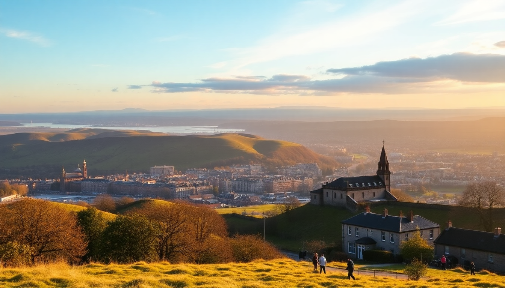

10-Day UK Trip: London, Edinburgh & the Lake District

I just got back from a 10-day sprint through the UK — London, Edinburgh, and the Lake District — and I’m writing this while the train times and pub prices are still fresh in my head. This itinerary keeps you moving without making you exhausted. You’ll cover three very different regions, each worth at least a few days, with one big caveat: the Lake District needs a car or a lot of patience with buses. Here’s exactly how I did it, what I’d skip, and what I’d book ahead.
How do you split 10 days across London, Edinburgh, and the Lake District?
I landed at Heathrow and worked north. That’s the only sensible route unless you want to backtrack. My split was 4 nights in London, 3 in Edinburgh, and 3 in the Lake District. It felt right — London has enough for a week on its own, but 4 days let me hit the essentials without burnout. Edinburgh is compact enough to cover in 3 days, and the Lake District is best enjoyed slowly from a single base.
The train between London and Edinburgh takes about 4.5 hours on LNER from King’s Cross. From Edinburgh to the Lake District, you’ll change at Oxenholme for Windermere — that leg is about 2.5 hours total. Book advance tickets on LNER or Avanti West Coast about 6 weeks out to keep prices under £50 per leg.
What should you actually do in London for 4 days?
Skip the London Eye (long queue, average view) and the Tower of London unless you’re really into Crown Jewels. Instead, focus on neighborhoods. I stayed near Covent Garden at The Fielding Hotel — tiny rooms but dead quiet and steps from the tube. From there, I walked everywhere.
Day 1: Walk from Westminster Bridge past Big Ben to St. James’s Park, then through Whitehall to Trafalgar Square. That’s a full morning. Lunch at The Ivy Market Grill near Covent Garden — book a week ahead or you’ll queue.
Day 2: Borough Market for breakfast (arrive before 10am to avoid crowds). Then the Tate Modern (free, great view from the top floor). Afternoon in Shoreditch for vintage shops and street art. Dinner at Brat in Shoreditch — whole turbot is worth the hype.
Day 3: Day trip to Greenwich. Take the Uber Boat from Embankment to Greenwich Pier — it’s faster than the tube and gives you a river view. See the Cutty Sark, walk up to Greenwich Park for the skyline, then have a pint at The Trafalgar Tavern.
Day 4: British Museum in the morning (get there at 9:30am for the Rosetta Stone without a crowd). Afternoon in Notting Hill — walk Portobello Road Market, but skip the tourist stalls near the tube station. Head north to Golborne Road for better antiques and fewer people.
- Skip: Madame Tussauds, London Dungeon, any hop-on-hop-off bus
- Book ahead: Sky Garden (free but requires a timed slot), The Ivy restaurants
- Transport tip: Get an Oyster card at any tube station — tap in/out is cheaper than contactless for visitors
Is Edinburgh really walkable, and what should you not miss?
Yes, it’s walkable if you’re fit. The Royal Mile runs downhill from the Castle to Holyrood Palace, and everything else branches off it. I stayed at The Balmoral Hotel — expensive but worth it for the location right at Waverley Station. If that’s out of budget, The Scotsman Hotel next door is a solid alternative.
Day 5 (arrival): After the train from London, drop bags and walk up to Edinburgh Castle (book a 2pm entry slot — the 1pm gun is loud but fun). Then walk down the Royal Mile, stopping at St. Giles’ Cathedral. Dinner at The Witchery by the Castle — it’s touristy but the atmosphere is legit.
Day 6: Arthur’s Seat hike at sunrise (7am in summer, 8am in winter — 45 minutes to the top). Afternoon at National Museum of Scotland (free, excellent Scottish history floor). Evening whisky tasting at The Scotch Whisky Experience — the tour is cheesy but the tasting room has 200+ bottles you can try by the dram.
Day 7: Day trip to Rosslyn Chapel (take the 37 bus from Princes Street — 30 minutes). It’s smaller than photos suggest but the carvings are incredible. Back in town, walk Dean Village for the quieter, postcard view of Edinburgh. Dinner at The Kitchin if you want Michelin-starred Scottish food — book 8 weeks ahead.
- Skip: The Royal Mile’s tartan shops (all made in China), the Camera Obscura (overpriced)
- Book ahead: Edinburgh Castle (especially in summer), The Kitchin, any ghost tour that goes underground
- Transport tip: Walk or take Lothian Buses — Uber is unreliable in the Old Town
How do you get around the Lake District without a car?
Honestly, it’s a pain. The Lake District is designed for drivers. I rented a car from Enterprise in Windermere for 3 days — about £120 total. If you can’t drive, the 555 Stagecoach bus runs from Windermere to Keswick and covers most of the central lakes, but it runs hourly and stops early.
Day 8 (arrival): Train from Edinburgh to Oxenholme Lake District, then change for Windermere (20 minutes). Pick up the rental car. Stay at The Samling in Windermere — it’s pricey but the views over Lake Windermere are unbeatable. Afternoon walk along Orrest Head (a 20-minute uphill from Windermere town — best first view of the lakes).
Day 9: Drive to Ambleside (15 minutes). Walk to Stock Ghyll Force waterfall (30 minutes round trip). Then drive to Grasmere for lunch at The Jumble Room — try the sticky toffee pudding. Afternoon hike to Rydal Water (easy 2-mile loop). Evening pint at The Drunken Duck near Ambleside — great local ales.
Day 10: Drive to Derwentwater near Keswick (45 minutes from Windermere). Rent a rowboat from Keswick Launch — £15 for an hour, better than the tourist boats. Walk the Catbells ridge if you’re fit (3 hours, moderate difficulty). Drive back to Windermere for the return train to London or Manchester airport.
- Skip: The Windermere lake cruises (overcrowded, expensive), Beatrix Potter museum (small, only for fans)
- Book ahead: The Samling (months in advance), rental car (especially in summer), any restaurant in Ambleside or Keswick
- Transport tip: If you don’t rent a car, base yourself in Windermere and take the 555 bus to Grasmere and Keswick. Check the last bus time — they stop around 6pm.
FAQ
Should I buy a London Pass or City Pass? No. I tried the London Pass once and broke even only because I forced myself into the Tower of London. You’re better off paying individually for the 3-4 attractions you actually want to see. The only pass worth it is the National Trust pass if you plan to visit multiple country houses in the Lake District.
What’s the best way to handle luggage between cities? I used Luggage Hero lockers in London (£5 per day) to store my bag between checkout and the train. For the London-to-Edinburgh leg, I took the train and kept my bag in the overhead rack — no issues. For the Lake District, the rental car solved luggage. Avoid shipping luggage between cities — it costs £30+ per bag and takes 2 days.
Is the Lake District worth it if I only have 2 days? Yes, but only if you rent a car. Without a car, 2 days means you’ll see Windermere and maybe one bus trip to Grasmere — that’s fine but you’ll miss the best hikes. If you can only do 2 days, skip Keswick and focus on Ambleside and Grasmere — they’re the most accessible without a long drive.
Conclusion
- Book trains early: LNER advance tickets from London to Edinburgh drop to £30 if you book 6 weeks out. Same for Avanti to Oxenholme.
- Skip the tourist traps: London Eye, Royal Mile tartan shops, Windermere lake cruises — they’re all overpriced and crowded.
- Rent a car for the Lake District: It doubles your options and saves hours waiting for buses. Enterprise in Windermere is reliable.
- Eat local: The Ivy in London, The Kitchin in Edinburgh, and The Jumble Room in Grasmere are worth the advance booking hassle.
- Pack layers: I wore a t-shirt and rain jacket in July and was comfortable. UK weather changes every 30 minutes.